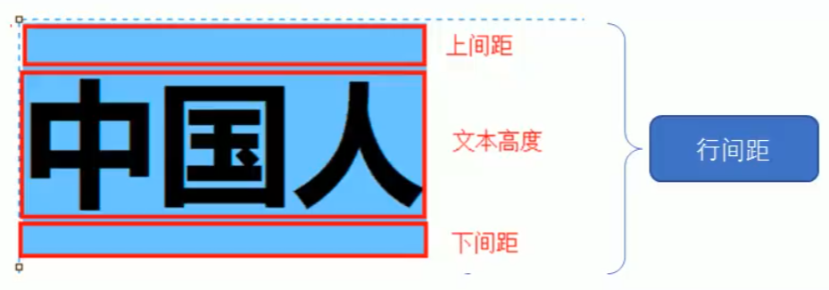

span {
// 开发过程中通常使用16进制数值表示颜色
color: #FF001;
// 最常用的为left、center、right；设置对其的参考系是这个文本元素所处的盒子的Rect, 文档地址
text-align: center；
// 最常用的为添加下划线和去除其他装饰, 文档地址
text-decoration: none; // underline（下划线）、none（去除所有的装饰）
// 文本首行缩进，单位是px(像素)或em(自适应单位，数值上等于font-size，如果自身没有设置，则等于父元素的size【CSS的继承相关】)，数值可以是负数（为负数时左移）
text-indent:
// 行高由三部分组成：上下间距 + 文本自身高度; 当设置的行高小于字体size时，文字将会出现重叠
line-height: 20px;
}

啊神奇的九寨 啊神奇的九寨 啊神奇的九寨 啊神奇的九寨 啊神奇的九寨 啊神奇的九寨 啊神奇的九寨 啊神奇的九寨 啊神奇的九寨 啊神奇的九寨 啊神奇的九寨 啊神奇的九寨 啊神奇的九寨 啊神奇的九寨 啊神奇的九寨